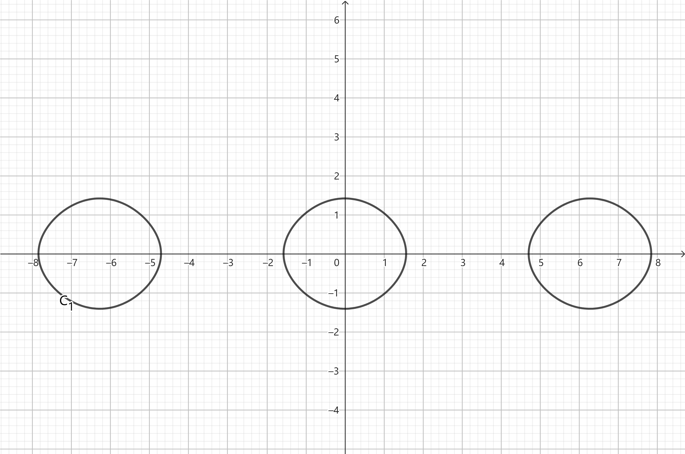
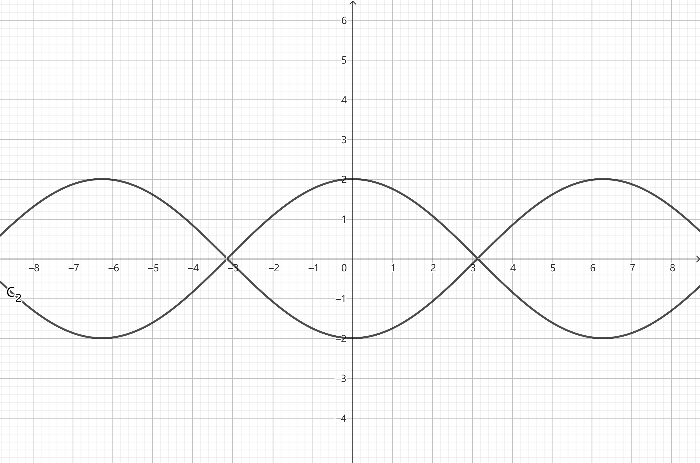

1
(a)
正则方程为：
x˙=∂p∂H=mp
p˙=−∂x∂H=−mω2x
得到：
x¨+ω2x=0
解得：
x=Asin(ωt+φ)
p=mx˙=mAωcos(ωt+φ)
消去 t 得：
A2x2+m2A2ω2p2=1
这是一个 (x,p) 相空间中的椭圆

其中，B(A,0),C(0,mAω)
(b)
x¨=dtdx˙=dxdx˙dtdx=x˙dxdx˙
代入 x¨=−sinx 中，得到：
x˙dx˙=−sinxdx
积分得：
2x˙2=cosx+C′
即：
x˙=±2cosx+C
当 C<−2，无解，没有不动点
当 C=−2，则 x=2kπ，x˙=0，不动点是分布在 x 轴上的点集 {(x,0)∣x=2kπ,k∈Z}
当 −2<C<2，

第一类不动点为每个封闭曲线与 x 轴的右交点，以封闭曲线上半支上任何一点为初始状态的质点会向 x 轴正方向运动，最后停在第一类不动点
第二类不动点为每个封闭曲线与 x 轴的左交点，以封闭曲线下半支上任何一点为初始状态的质点会向 x 轴负方向运动，最后停在第二类不动点
当 C=2，

所有不动点都一样。以曲线上半支上任何一点为初始状态的质点会向 x 轴正方向运动，最后停在最近的不动点；以曲线下半支上任何一点为初始状态的质点会向 x 轴负方向运动，最后停在最近的不动点
当 C>2，

没有不动点。以曲线上半支上任何一点为初始状态的质点会向 x 轴正方向运动，永远不停；以曲线下半支上任何一点为初始状态的质点会向 x 轴负方向运动，永远不停
2
(a)
以 x,y,z 为广义坐标，拉式量为：
L=21m(vx2+vy2+vz2)−eϕ+ce(Axvx+Ayvy+Azvz)
计算广义动量：
⎩⎨⎧px=∂vx∂L=mvx+ceAxpy=∂vy∂L=mvy+ceAypz=∂vz∂L=mvz+ceAz
矢量形式为：
p=mv+ceA
用广义动量和广义坐标表示广义速度：
v=mp−cmeA
于是得到哈密顿量：
H=−L+α∑pαq˙α=−21mv2+eϕ−ceA⋅v+(mv+ceA)⋅v=eϕ+2m1(p−ceA)2
(b)
正则方程的矢量形式为
r˙=∂p∂H=m1(p−ceA)
p˙=−∂r∂H=−e∇ϕ+mce(p−ceA)∇⋅A
两者联立，消去 p,p˙ 得：
mr¨+e∇ϕ=0(1)
原来的欧拉-拉格朗日方程为：
dtd∂q˙α∂L−∂qα∂L=0
矢量形式为：
dtd∂r˙∂L−∂r∂L=0
代入 L=21mv2−eϕ+ceA⋅v 得：
mr¨+e∇ϕ=0(2)
方程 (1)(2) 完全一样
3
选取直角坐标 x1,x2,x3 为广义坐标
计算广义动量：
pα=∂x˙α∂L=m01−c2v2x˙α, α=1,2,3
用广义动量和广义坐标表示广义速度：
v2=m02c2+p2c2p2
于是得到哈密顿量：
H=−L+α=1∑3pαq˙α=m0c21−c2v2+1−c2v2m0v2=cm02c2+p2=m02c4+c2p2
4
(a)
泊松括号的定义为：
{f,g}≡α∑(∂qα∂f∂pα∂g−∂pα∂f∂qα∂g)
用泊松括号表示的正则方程为：
q˙α={qα,H}
p˙α={pα,H}
(b)
采用爱因斯坦求和约定：
r=xiei
p=pjej
J=r×p=εijkxipjek
Jk=εijkxipj
于是：
{Ja,pb}=α∑(∂qα∂Ja∂pα∂pb−∂pα∂Ja∂qα∂pb)=∂xb∂Ja=∂xb∂(εijaxipj)=εbjapj=εabjpj=εabcpc
{Ja,xb}=α∑(∂qα∂Ja∂pα∂xb−∂pα∂Ja∂qα∂xb)=−∂pb∂Ja=−∂pb∂(εijaxipj)=−εibaxi=εabixi=εabcxc
{Ja,Jb}=α∑(∂qα∂Ja∂pα∂Jb−∂pα∂Ja∂qα∂Jb)=∂xα∂(εijaxipj)∂pα∂(εlmbxlpm)−∂pα∂(εijaxipj)∂xα∂(εlmbxlpm)=εαjapj⋅εlαbxl−εiαaxi⋅εαmbpm=εαjaεαblxlpj+εαiaεαmbxipm=(δjbδal−δjlδab)xlpj+(δimδab−δibδam)xipm=xapb−δabxjpj+δabxmpm−xbpa=xapb−xbpa
而：
εabcJc=εabcεijcxipj=εcbaεcjixipj=(δbjδai−δbiδaj)xipj=xapb−xbpa
于是：
{Ja,Jb}=εabcJc
(c)
注意到：
{Ja,J2}={Ja,J⋅J}=J{Ja,J}+{Ja,J}J=2J{Ja,J}
要证明 {Ja,J}=0，只需要证明 {Ja,J2}=0
注意到：
{Ja,J2}={Ja,J12+J22+J32}={Ja,J12}+{Ja,J22}+{Ja,J32}=2J1{Ja,J1}+2J2{Ja,J2}+2J3{Ja,J3}=2J1εa1cJc+2J2εa2cJc+2J3εa3cJc=2Jc(J1εa1c+J2εa2c+J3εa3c)=2εabcJbJc
当 a=1，
{J1,J2}=2ε1bcJbJc=2J2J3−2J2J3=0
当 a=2，
{J2,J2}=2ε2bcJbJc=−2J1J3+2J1J3=0
当 a=3，
{J3,J2}=2ε3bcJbJc=2J1J2−2J1J2=0
综上，{Ja,J2}=0，于是 {Ja,J}=0
(d)
设角动量的第一个分量 Ja 和第二个分量 Jb 是守恒量，其中 a=b，(b)中的结论给出：
{Ja,Jb}=εabcJc
泊松定理说，若 f,g 都是守恒量，则 {f,g} 也是守恒量，在这里得到 εabcJc 也是守恒量
当 a=b=c 时，εabc=1或−1 是个常数，于是角动量的第三个分量 Jc 也是个守恒量
(e)
注意到：
{Ja,p2}={Ja,pbpb}=2pb{Ja,pb}=2pbεabcpc=−2εcbapcpb=−2(p×p)a=0
{Ja,r2}={Ja,xbxb}=2xb{Ja,xb}=2xbεabcxc=−2εcbaxcxb=−2(r×r)a=0
而 H=2mp2+V(r)=2mp2+V(r2)
于是：
{Ja,H}=0
于是：
dtdJa=∂t∂Ja+{Ja,H}={Ja,H}=0
这就是说，Ja 是个守恒量
而：
dtdJa2=2JadtdJa=0
于是：
dtdJ2=dtd(J12+J22+J32)=0
这就是说，J2 也是个守恒量
5
y=ax2⟹y˙=2axx˙
动能：
T=21m(x˙2+y˙2+ω2x2)=21m(x˙2+4a2x2x˙2+ω2x2)
选取原点所在平面为零势能面，则势能为：
V=mgy=mgax2
拉格朗日量为：
L=T−V=21m(x˙2+4a2x2x˙2+ω2x2)−mgax2
计算广义坐标 x 对应的广义动量 px：
px≡∂x˙∂L=mx˙+4ma2x2x˙
用广义坐标 x 和广义动量 px 表示广义速度 x˙：
x˙=m+4ma2x2px
哈密顿量为：
H=−L+pxx˙=mgax2−21mω2x2+2m1⋅1+4a2x2px2
正则方程为：
x˙=∂px∂H=m(1+4a2x2)px
p˙x=−∂x∂H=−2mgax+mω2x+m(1+4a2x2)24a2xpx2
消去 px 得：
(1+4a2x2)x¨+4a2xx˙2+(2ga−ω2)x=0
6
(a)
广义坐标的选取为：圆锥内质点的三个球坐标 r,θ,φ 和圆锥表面上的质点的方位角 ϕ 为广义坐标
r1=rsinθcosφex+rsinθsinφey+rcosθez
r2=(L−r)sin(π−α)cosϕex+(L−r)sin(π−α)sinϕey+(L−r)cos(π−α)ez=(L−r)sinαcosϕex+(L−r)sinαsinϕey−(L−r)cosαez
动能：
T=21mr˙12+21mr˙22=21m(r˙2+r2θ˙2+r2φ˙2sin2θ)+21m(r˙2+(L−r)2ϕ˙2sin2(π−α))=21m(r˙2+r2θ˙2+r2φ˙2sin2θ)+21m(r˙2+(L−r)2ϕ˙2sin2α)
选取 xOy 平面为零势能面，势能为：
V=mgrcosθ+mg(L−r)cos(π−α)=mgrcosθ−mg(L−r)cosα
拉格朗日函数为：
L=T−V=21m(r˙2+r2θ˙2+r2φ˙2sin2θ)+21m(r˙2+(L−r)2ϕ˙2sin2α)−mgrcosθ+mg(L−r)cosα
(b)
计算广义动量：
pr=∂r˙∂L=2mr˙
pθ=∂θ˙∂L=mr2θ˙
pφ=∂φ˙∂L=mr2φ˙sin2θ
pϕ=∂ϕ˙∂L=m(L−r)2ϕ˙sin2α
用广义坐标和广义动量表示广义速度：
r˙=2mpr
θ˙=mr2pθ
φ˙=mr2sin2θpφ
ϕ˙=m(L−r)2sin2αpϕ
哈密顿量为：
H=T+V=4mpr2+2mr2pθ2+2mr2sin2θpφ2+2m(L−r)2sin2αpϕ2+mgrcosθ−mg(L−r)cosα
(c)
正则方程为：
q˙α=∂pα∂H
p˙α=−∂qα∂H
r 满足的方程：
2r¨−(θ˙2+φ˙2sin2θ+ϕ˙2sin2α)r+Lϕ˙2sin2α+gcosθ+gcosα=0(1)
θ 满足的方程：
rθ¨+2r˙θ˙−rφ˙2sinθcosθ−gsinθ=0(2)
φ 满足的方程：
mr2sin2θ⋅φ˙=C1
或：
rsinθ⋅φ¨+(2r˙sinθ+2rθ˙cosθ)φ˙=0
ϕ 满足的方程：
m(L−r)2sin2α⋅ϕ˙=C2
或：
(L−r)ϕ¨−2ϕ˙=0
(d)
H 不显含时间 t，体系具有时间平移不变性，能量守恒
H 不显含 φ，于是 φ 对应的广义动量 pφ 是守恒量
H 不显含 ϕ，于是 ϕ 对应的广义动量 pϕ 是守恒量
(e)
当 r,θ,φ˙ 均为常数时，由方程 (2) 得：
φ˙2=rcosθ−g
代 入方程 (1) 得：
ϕ˙=(L−r)sin2αg(1−cosα)